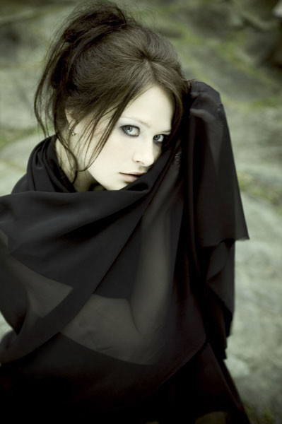
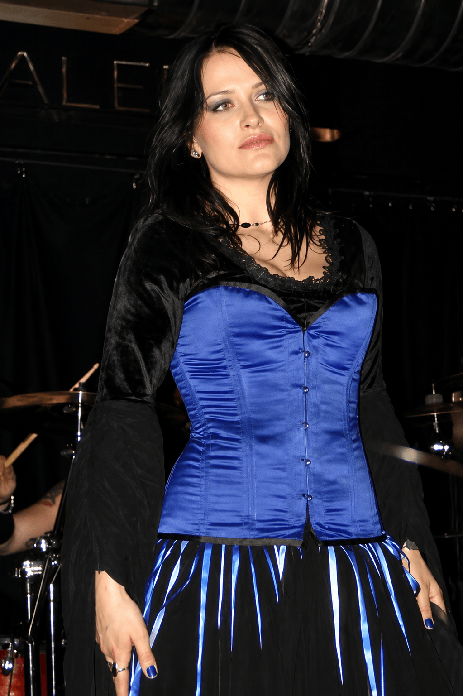

1997
Entrada na cena metal norueguesa e consolidação da carreira artística no gothic metal.
Uma homenagem à voz etérea e marcante da cantora norueguesa que se tornou referência mundial no metal sinfônico.
Explorar Tributo
Vibeke Stene ficou internacionalmente conhecida como uma das vozes mais emblemáticas do gothic metal e metal sinfônico, especialmente por sua trajetória na banda Tristania.
Sua interpretação vocal ajudou a definir uma era do metal europeu, combinando suavidade lírica, atmosfera sombria e grande presença artística.
Além da música, Vibeke também é reconhecida por sua postura discreta, sofisticada e admirada por fãs do gênero ao redor do mundo.
Entrada na cena metal norueguesa e consolidação da carreira artística no gothic metal.
Lançamento de álbuns que ajudaram a popularizar o metal sinfônico mundialmente.
Período de grande reconhecimento internacional com apresentações, turnês e forte impacto na cena europeia.
O último grande lançamento de Vibeke Stene (ex-Tristania) é o álbum "Dead Poetry" da sua nova banda de doom metal, Veil of Secrets
Lançamento o single "Dette jeg ikke ser", em colaboração com Ragnar Bjerkreim.
Influência contínua sobre novas gerações de vocalistas femininas do metal atmosférico e sinfônico.

Tributo artístico inspirado na trajetória de Vibeke Stene.
Com o Tristania, Vibeke gravou cinco álbuns de estúdio, um EP e um compacto:


Após longos 15 anos de silêncio, foi anunciado o lançamento do primeiro álbum após sua saída do tristania em 2007, dead poetry vem com uma mudança no nome da banda anunciado em 2013, agora o projeto trás as iniciais da cantora e chama Veil of Secrets, foi lançado no dia 30 de novembro de 2020 pela Crime Records , em parceria com Asgeir Mikaelson (ex-Borknagar, Sarke, Ihsahn, Spiral Architect, Vintersorg, Testament.) o álbum tem um maior protagonismo a voz de vibeke, a sonoridade da banda é um Doom Metal Melancólico, flerta com a estética gótica com guitarras densas, violino, letras fortes e conta com vocais gulturais, um presente aos fãs da cantora, que esperavam tanto o seu retorno, toda essa sonoridade trazem a magia única do estilo dark que acompanha a cantora, mostrando ao público que ela continua encantada com essa estética bela e triste.